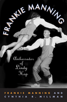

<body bgcolor="#FFFFFF" text="#000000" link="#0000FF" vlink="#CC0000" alink="#CC0000"><center><hr width="350" size="1" align="center" noshade>The autobiography of a legendary swing dancer<hr width="350" size="1" align="center" noshade><p><a href="https://cdcshoppingcart.uchicago.edu/Cart/ChicagoBook.aspx?ISBN=9781592135639&&PRESS=temple" target="_top">Buy this book!</a> | <a href="https://cdcshoppingcart.uchicago.edu/Cart/Cart.aspx?PRESS=temple" target="_top">View Cart</a> | <a href="https://cdcshoppingcart.uchicago.edu/Cart/Cart.aspx?PRESS=temple" target="_top">Check Out</a></p><p></p></center><!--none//--><h1>Frankie Manning</h1>
<H2>Ambassador of Lindy Hop</H2>
<h3>Frankie Manning and Cynthia R. Millman</h3>
<P>cloth 1592135633 $65.50, May 07, <FONT COLOR=#990033>Available</FONT>
<br>paper 1592135641 $24.95, Oct 08, <FONT COLOR=#990033>Available</FONT>
<BR> 312 pp
6x9
36&nbsp;halftones
</P><BLOCKQUOTE><I><p><i>"On behalf of all of the Hoofer’s, we thank you and salute you for every moment of truth, love and dedication translated to us all through your art form, your dance. Thank you Frankie Manning. I Love You!" </i></i><br><b>&#151Savion Glover</b>
<p><i>"A poet of the dance floor. This book is a must read for anyone who loves the dance, amateur or professional. What a life he has lived, and thank God he remembers it all!"</i><br><b>&#151Bette Midler</b>, student and fan<i></I></BLOCKQUOTE>
<p>In the early days of swing dancing, Frankie Manning stood out for his moves and his innovative routines; he created the "air step" in the Lindy hop, a dance that took the U.S. and then the world by storm. In this fascinating autobiography, the choreographer and Tony Award winner (Black and Blue) Frankie Manning recalls how his first years of dancing as a teenager at Harlem's Savoy Ballroom led to his becoming chief choreographer and a lead dancer for Whitey's Lindy Hoppers, a group that appeared on Broadway, in Hollywood musicals, and on stages around the globe. Manning brings the Swing Era vividly back to life with his recollections of the crowded ballrooms, and of Lindy hoppers trying to outdo each other in spectacular performances. His memories of the many headliners and film stars, as well as uncelebrated dancers with whom he shared the stage, create a unique portrait of an era in which African American performers enjoyed the spotlight if not a star's prerogatives and salary.
<p>
With collaborator Cynthia Millman, Manning traces the evolution of swing dancing from its early days in Harlem through the post-World War II period, until it was eclipsed by rock 'n' roll and then disco. When swing made a comeback, Manning's 30-year hiatus ended. He has been performing, choreographing, and teaching ever since.
<BR>&nbsp;<h2>Reviews</h2>
<p><I>"Dance writer and swing dancer Millman conducted extensive interviews with Manning for a vivid account of his career... the first-person accounts of Manning's life capture his vibrancy, humor and charm...this vivid memoir by one of swing dancing's innovators and stars is a must for lovers of dance, jazz and African-American history."</I>
<br>&#151<b><I>Publishers Weekly</I></b>
<p><I>"Dancer/librarian Millman calls Manning "a prime innovator of the Lindy" and captures the sensation of the lindy hop (a.k.a. the jitterbug)... Manning's personality comes across via his vivid descriptions of dance contests, the excitement of choreographing, and the lindy's decline and revival. He also discusses the racism he faced in the U.S. Army during World War II and while on tour....This is an interesting and significant piece of the swing dance record valuable for its oral history. Recommended for academic libraries with dance history collections."</I>
<br>&#151<b><I>Library Journal</I></b>
<p><I>"Sit down with the book and you will feel you’ve sat down with Frankie in person to hear the wonderful story of his life."
</I><br>&#151<b><I>Swing Dancer Magazine</I></b>
<p><I>"Manning has aged gracefully in spirit...sounding likeable and constantly refraining from grinding axes or settling scores, in what is a very readable memoir." </I>
<br>&#151<b><I><a href="http://www.jbspins.blogspot.com/2007/07/frankie-manning-ambassador.html" target="new">j.b. spins</a></I></b>
<p><I>"An engaging narrative with a dose of Lindy lore."
</I><br>&#151<b><I>Dance Teacher</I></b>
<p><I>"Frankie Manning has now emerged to share the most informative creative insight to date...sensitively co-written by Cynthia Millman, [the book] throws new light on broad swathes of original jazz dance practices…</i>[Frankie Manning]<i> chronicles the dedication, rehearsals, and heard-earned technical virtuosity of a dance form often seen as reckless exuberance. Unlike most writing on the subject, Frankie’s detailed acknowledgment of his various Linda partners subtly guides the reader to the dance’s reciprocally rhythmic defining character. Frankie’s disciplining of his body clearly matches the determination of his intellect that through telling his story significantly enlarges our understanding of 20th century popular dance."</I>
<br>&#151<b><I>Dancing Times</I></b>
<p><I>“On the crowded dance floor of Harlem's Savoy Ballroom, a nimble young New Yorker named Frankie Manning found his calling. Manning became a swing dancer who helped refine and popularize the Lindy Hop — that remarkable, airborne style of terpsichorean Americana — and go on to teach it to eager dancers his grandkids' age. In this good-humored, oral history-style autobiography, Manning covers a jumpin' and jivin' career that won't quit. (The 93-year old dancer recently showed off his classy moves at Seattle's Century Ballroom.) Making "guest appearances" here are many great dancers and musicians from the Swing Era and beyond. And among the many delightful photos is a publicity glossy of star hoofer Bill "Bojangles" Robinson inscribed, ‘To Frankie, The Greatest Lindy Hopper of Them All.’”</I>
<br>&#151<b><I>The Seattle Times</I></b>
<p><I>"Assembled from interviews Millman conducted with Manning over 13 years, joins Norma Miller's </i><a href="1214_reg.html" target="_top">Swingin' at the Savoy</a><i>, written with Evette Jensen (also published by Temple, 1996), in recounting how some African American social dances gained international renown….Well-chosen photographs evoke the era and confirm the vibrancy of the dance forms. Appendixes providing a Manning time line, biographical sketches of Lindy hoppers, and a listing of swing dance resources greatly enhance the volume… Summing Up: Recommended."</I>
<br>&#151<b><I>Choice</I></b>
<p><I>"[T]his is an important book for anyone who is interested in lindy hop or the swing era….If you’re a lindy hopper, you should own this book!"</I>
<br>&#151<b><I><a href="http://swingjazzblues.blogspot.com/2008/05/book-review-frankie-manning-ambassador.html" target="new">Swingjazzblues</a></I></b>
<p><I>"Frankie Manning's story, a labor of love and commitment, makes a magnificent contribution to the history of the Lindy Hop from its beginnings in the Savoy Ballroom to its resurgence as an internationally celebrated jazz artform.... [E]ssential reading for anyone interested in this rich period in the development of America's indigenous dance and music."</I>
<br>&#151<b><I>Dance Magazine</I></b>
<BR>&nbsp;<P><p>Visit Frankie Manning's website at <a href="http://www.frankiemanning.com/"target="new"> www.frankiemanning.com
<p>Read an interview with Cynthia Millman, co-author of <i>Frankie Manning</i> on<a href="http://swingjazzblues.blogspot.com/2007/05/interview-cynthia-millman-manning.html"target="new"> www.swingjazzblues.com</a> blog.</P><BR>&nbsp;<br>
<h2>Contents</h2><P>
<p>Acknowledgments / i<br>
Foreword: Mercedes Ellington<br>
Frankie Manning: An Appreciation by Cynthia R. Millman / xi<br>
Prologue: Too Stiff / 1<br>
<p>PART ONE: EARLY STEPS (1914-circa 1933)<br>
Chapter 1. Jazz Baby / 5<br>
Chapter 2. Early Ballroom Forays / 21<br>
<p>PART TWO: SAVOY DANCER (circa 1933-1936)<br>
Chapter 3. To the Savoy at Last / 47<br>
Chapter 4. Whitey, Shorty, and Stretch / 72<br>
Chapter 5. Win Win / 85<br>
Chapter 6. Up in the Air She Goes / 102<br>
<p>PART THREE: WHITEY'S LINDY HOPPERS (1936-1943)<br>
Chapter 7. Going Pro / 129<br>
Chapter 8. Big Time at the Cotton Club / 149<br>
Chapter 9. A Big Apple for Whitey / 174<br>
Chapter 10. On Broadway and In the Movies / 213<br>
Chapter 11. Stranded in Rio / 246<br>
<p>PART FOUR: WAR AND HOME (1943-1984)<br>
Chapter 12. Dancer Interrupted / 259<br>
Chapter 13. The Congaroo Dancers and a Day Job / 275<br>
<p>PART FIVE: SECOND ACT (1984-present)<br>
Chapter 14. Revival / <br>
<p>APPENDIXES<br>
A. Frankie Manning Timeline / 347<br>
B. Biographies of Lindy Hoppers<br>
C. List of Works Cited or Consulted /<br>
C. Frankie's List of Swing Dance on Film/TV<br>
D. Swing Dance Resources<br>
E. Swing Dance Organizations and Events
Index<br>
</P><BR>&nbsp;<H2>About the Author(s)</H2>
<table><tr><td valign="top"><img src="/tempress/authors/1877_au1.gif" height="90" width="75"></td><td width="100%" valign="middle"><p>Lindy hopper <b>Frankie Manning</b> (1914-2009) won a 1989 Tony Award for his choreography in <i>Black and Blue</i>, was honored by the National Endowment for the Arts with a National Heritage Fellowship, and served as a consultant for and danced in Spike Lee's <i>Malcolm X</i> and Debbie Allen's <i>Stompin' at the Savoy</i>. Frankie's choreographic contributions to the lindy, his professional dance career with Whitey's Lindy Hoppers and the Congaroo Dancers, and his vital role in the swing dance revival have been widely chronicled in the news media, books, and documentaries, including Ken Burns's Jazz and an ABC News 20/20 profile.</P></td></tr></table><table><tr><td valign="top"><img src="/tempress/authors/1877_au2.gif" height="90" width="75"></td><td width="100%" valign="middle"><p><b>Cynthia R. Millman</b> taught dance and performed for over twenty-five years, including five years with the Big Apple Lindy Hoppers. She has studied and partnered with Frankie, and lectures with him on the history of the Lindy. A librarian at The Town School in Manhattan, Cynthia has contributed articles to <i>Dance Magazine</i> and <i>The International Encyclopedia of Dance</i>, and has served as a dance consultant on several documentaries.</P></td></tr></table>
<BR><H2>Subject Categories</H2>
<p><A HREF="/tempress/biography.html" TARGET="_top">Biography/Memoir/Autobiography</a>
<BR><A HREF="/tempress/music.html" TARGET="_top">Music and Dance</a>
<BR><A HREF="/tempress/african.html" TARGET="_top">African American Studies</a>
</p>
<p align="center"><a href="https://cdcshoppingcart.uchicago.edu/Cart/ChicagoBook.aspx?ISBN=9781592135639&&PRESS=temple" target="_top">Buy this book!</a> | <a href="https://cdcshoppingcart.uchicago.edu/Cart/Cart.aspx?PRESS=temple" target="_top">View Cart</a> | <a href="https://cdcshoppingcart.uchicago.edu/Cart/Cart.aspx?PRESS=temple" target="_top">Check Out</a></p><p><font face="Arial" size="1"><a href="copyright.html" onMouseOver="window.status='Web Copyright Policy';return true;" onMouseOut="window.status=''" title="Web Copyright Policy">&copy;</a> 2015 <a href="http://www.temple.edu" target="new" onMouseOver="window.status='Link to Temple University home page';return true;" onMouseOut="window.status=''" title="Link to Temple University home page">Temple University</a>. All Rights Reserved. http://www.temple.edu/tempress/titles/1877_reg.html</font></p>